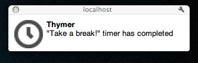

This is part 2 in a series of posts walking through my experiences building Thymer, a single-page web application using HTML5 and related technologies. In my first post, I got the basics of the application working and used the Local Storage API to store timers between browser refreshes. In this article, I’m going to talk about the Notification API and the <audio> tag.
The Notification API
Since my last post, I’ve made some minor fixes and UI tweaks to get Thymer feeling more like a usable application, but Thymer really wasn’t going to be useful unless it can grab a user’s attention when a timer ends. Recently Gmail introduced a new feature in Chrome where I get a nice little Growl-like notification whenever I received a Google Talk message. This was done using something called the Notification API. I wanted to see how easy it would be use this API to show a notification when a timer completes.
The Notification API is currently just a draft spec, and it’s support is currently only limited to Chrome. Once the API gets wider adoption, there’s a very good chance the API will change (at the minimum to rename the window.webkitNotifications object). Getting it working was super easy, basically by following this tutorial here.
First, I request permission to use the Notifications API when the first timer is created. It’s important to note that you can only request permission on a user triggered event like a mouse click or key event. In Thymer’s case, I request permission when the Enter key is pressed to submit a new timer:
$('#add-timer-form input').keypress(function(event) {
if (event.which == '13') { // Enter key
event.preventDefault();
var seconds = parseInt($('#secs').val()) +
(parseInt($('#mins').val()) * 60) +
(parseInt($('#hours').val()) * 60 * 60);
Thymer.addTimer(new Timer($('#timer-name').val(), seconds));
$('#timer-name').val('');
// request notifications permission if API is supported. We do
// this here because we can only do this on user triggered events.
if (window.webkitNotifications &&
window.webkitNotifications.checkPermission() != 0) {
window.webkitNotifications.requestPermission();
}
}
})
Then I create a notification when the timer ends:
_alarm:function() {
// show a notification if the browser supports it.
if (window.webkitNotifications &&
window.webkitNotifications.checkPermission() == 0) {
window.webkitNotifications.createNotification('clock_32x32.png',
'Thymer', '"' + this.name + '" timer has completed').show();
}
}
Here’s what the notification looks like:

Some notes about the Notifications API:
- I had issues with requestPermission() when using the file:// protocol where my permission got set as if I denied permission and didn’t give me a way to reset it. If you’re testing locally I recommend serving your page via localhost.
- Once you approve or deny the notification permission, users will not receive the permission infobar again when you call requestPermission(). You can reset the permission in Chrome from Preferences > Under the Hood > Content Settings (Under Privacy).
- The image parameter in createNotification() is not optional. Passing null will show a broken image.
The Audio Tag
So now I have a way to grab user’s attention when a timer completes in Chrome, but what about other browsers? How about playing an alarm sound when the timer completes? This turned out to be pretty easy with the <audio> tag:
<audio id=alarm-sound>
<source src=alarm.mp3 type=audio/mpeg />
<source src=alarm.ogg type=audio/ogg />
<source src=alarm.wav type=audio/wav />
</audio>
This sets up a audio clip that I can access from JavaScript via the element id. Since I don’t specify a controls or autoplay attribute, the audio won’t play until I want it to. I’m also specifying the three different sources for audio (gotta love proprietary sound formats). Between MP3 & Ogg Vorbis, all modern browsers should be covered, but I’m going to throw a WAV in there for completeness anyway. I am concerned about how this will affect my footprint when I setup offline mode for Thymer, but that’s an issue for a different post.
Playing the audio from JavaScript is cake:
_alarm:function() {
// show a notification if the browser supports it.
if (window.webkitNotifications && window.webkitNotifications.checkPermission() == 0) {
window.webkitNotifications.createNotification('clock_32x32.png', 'Thymer', '"' + this.name + '" timer has completed').show();
}
// play the alarm sound
document.getElementById('alarm-sound').play();
}
For more information about the Audio tag, I recommend this article at <html>5doctor. In that article they have a helpful table showing the browser support for the different audio formats.
This concludes Part 2 of this series. You can see the final code for this part here. You can also see the final application on the master branch as well as play with a running version of Thymer here. In part 3, I’m going to configure Thymer to run in offline mode by creating a cache manifest.